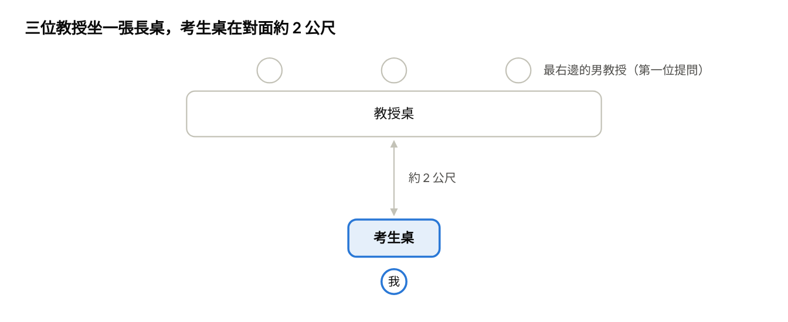

116 年特殊選才 天主教輔仁大學社會學系 面試心得
輔仁大學社會學系特殊選才面試的準備、現場過程與建議。
筆者賴奕帆，這是我報名 116 學年度天主教輔仁大學社會學系特殊選才的面試心得。
觀前聲明
以下講的所有內容僅限輔仁大學 116 學年度社會學系，就算是同一間學校，不同科系與學年也可能是不一樣的狀況，請自行斟酌。
報名與簡章資訊
我報名的是 116 學年度輔仁大學社會學系特殊選才。書面資料有需要的話可以 email 找我拿。
基本上只要有交出資料，就可以進面試。這學年進面試的有 42 人，名額只有兩位。
| 項目 | 日期與時間 |
|---|---|
| 簡章公布 | 9 月 17 日 |
| 報名開始 | 10 月 14 日上午 10:00 |
| 報名截止 | 10 月 21 日中午 12:00 |
| 報名費繳交截止 | 10 月 21 日下午 11:59 |
| 應考號碼 | 10 月 23 日上午 10:00 |
| 面試時地 | 10 月 28 日（約早上 10:00～11:00） |
| 面試日期 | 11 月 6 日 |
| 放榜與成績查詢 | 11 月 24 日上午 10:00 |
面試準備
穿著
我穿的是一件很可愛的男孩子灰色短褲，上身是一件 NET 廉價的襯衫，這已經是我最「正式」的衣服了。沒想到都來社會學系了，還是有那種穿全套西裝皮鞋的學生。嘆氣。
書面資料
我沒有把自傳和有利審查資料印出來。一是有五、六十頁，印出來很貴；二是我猜面試時間很短，基本上用不到。
所以我把所有資料濃縮成一張雙面 A4，印了三張帶過去。結果書面資料、任何紙張都不能帶進面試教室，那三張 A4 最後都留在休息室。
面試當天
11/06 早上八點四十八分，我坐在伯達樓二樓 BS204 社會實踐工作室。報到通知是這樣寫的：
以下考生請於第一梯次報到時間辦理報到
第一梯次辦理報到時間：115/11/06 上午 8:45–8:55
— 報到通知
一個梯次有 11 人，我是第一梯次，編號三。
休息室裡已經坐了九個人。先說裝潢：很 NPO 聚落，很像你國中國小會有的那種，一間塵封許久、但看起來很夢幻的教室。
大家完全沒有交談。想裝逼的在打筆電（這我），沒事的就坐著滑手機。
接著就輪到我進去面試。面試官是三位教授。

面試過程
自我介紹
一進去先要我自我介紹，結果我講太長了，講得非常長，一直講到教授打斷我為止。
教授會看過書面資料，以裡面的內容來問問題。
第一位教授：為什麼要家長陪同？
最右邊的男教授跟我說：「欸，這個未成年身心科就診『公共政策網路參與平臺』上面 5,000 份連署，其實只是主管機關回應。」
接著他問我：我怎麼理解當初為什麼會設定「這個治療一定要家長陪同」，他想知道當初為什麼這樣設定。
我的回答是：當初制定這個社會規範時，假設的是一個健康、能正常運作、可以全心全力支持小孩的家庭，但事實上並不是這個樣子。
第二位教授：社團怎麼做到多元包容？
第二位教授先肯定我書面資料裡寫的一段：現在能當兒少代表的，基本上都是經濟比較優勢的，家長甚至會幫忙買好全套西裝，而且很多是被親戚找去當的。他覺得這段很有趣。
接著他問：我自己身為一個社團的社長，要怎麼確保裡面的成員都能做到多元包容？
我回答說，我反而不知道要怎麼包容那些經濟優勢的人，因為我們社團本來就全部都是弱勢者，而這好像本來就應該是理所當然的事。
第三位教授：自閉症的自我認同重要嗎？
第三位教授問：診斷自閉症的自我認同，對我來說很重要嗎？
我說我的自閉症是 16 歲才診斷出來的，那時候已經過了我大半輩子，對我來說它就是我的大半輩子。所以它當然可以延伸到我國小、國中的所有經歷，包括沒辦法融入整個班級或團體。確診自閉症，對我來說就是可以解釋這些事情。
但講到一半就被打斷了，因為面試時間到了。前面的雛形我有講出來，所以我猜最後一題沒有回答完全，不過教授應該有聽懂。
面完的感受
面完之後，我最後的感覺是很穩。教授問的問題都很專業，我也回答得出來。
給之後報名的人的建議
不要穿西裝。我如果是教授，我一定刷掉所有穿全套西裝來面試的人（這段是玩笑以免你沒看出來）。
- 自我介紹不要講太長，我就是講到被教授打斷。
- 紙張帶不進面試教室，不用印一大疊資料。
你只要有內涵，練習一下口才，還有控制好每段話想表達的重點和時間即可。
贊助
覺得有幫助？幫我買男娘飲料（魔爪）。前往贊助頁面